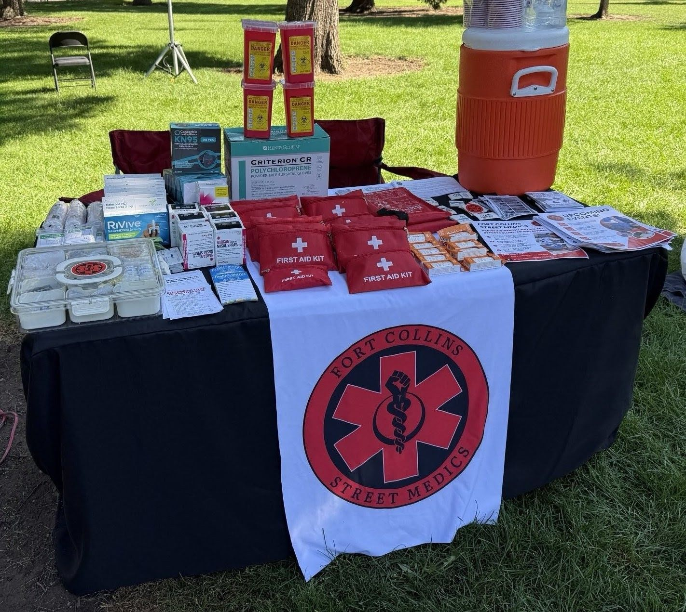
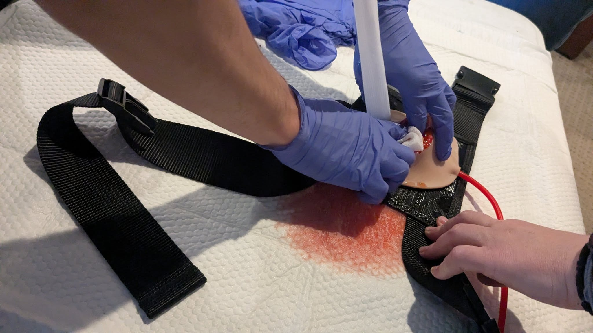
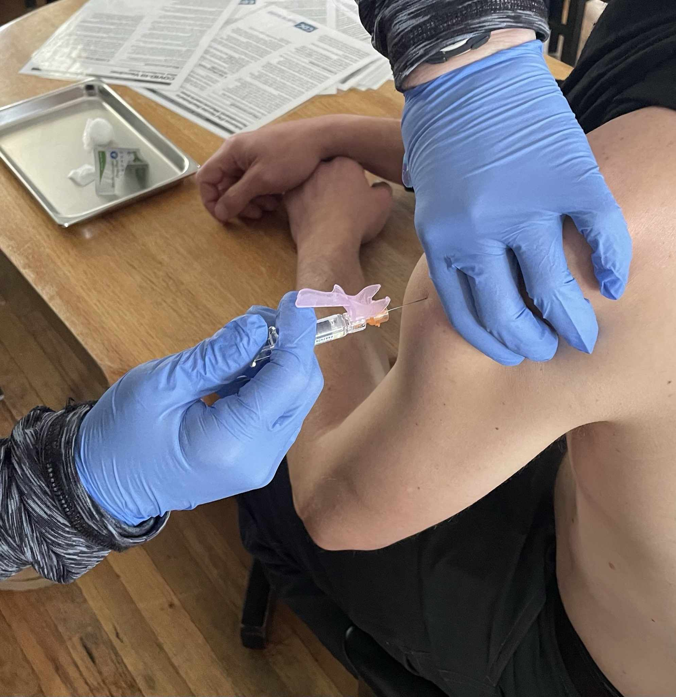
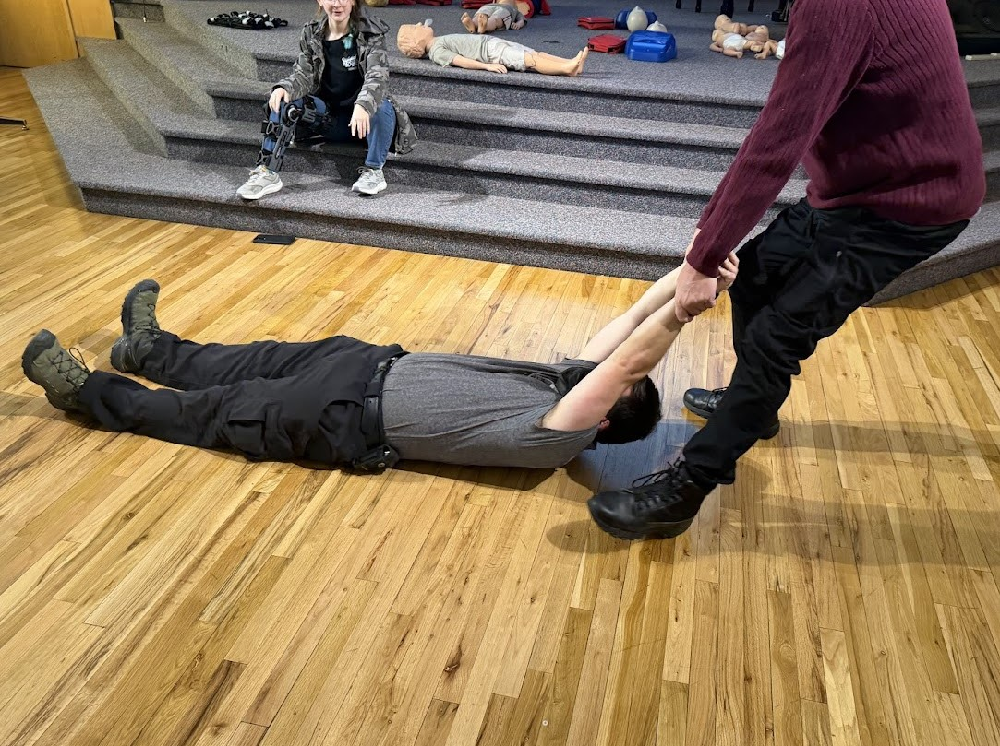
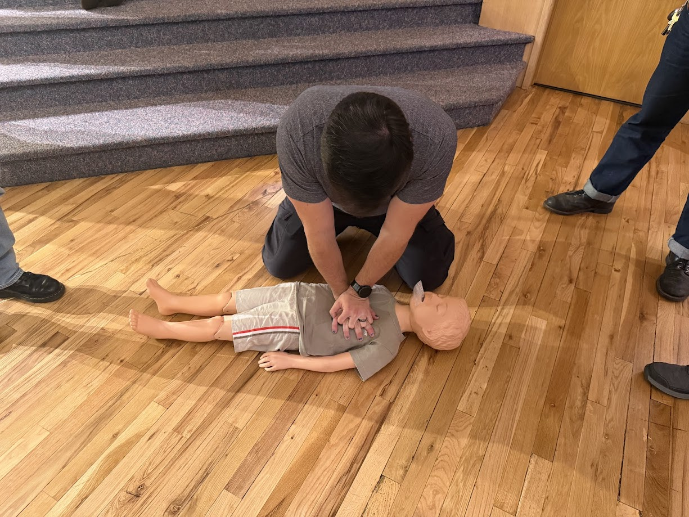
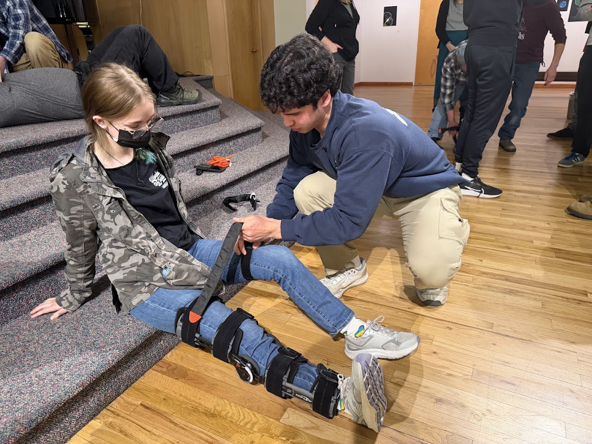

Grassroots medical support for Fort Collins. Trained by the people, for the people.
The Fort Collins Street Medics exists to provide free, accessible, and community-centered medical mutual aid in Fort Collins and beyond. We train and equip community members with essential first aid, emergency response, and street medicine skills so people can care for one another in moments of crisis and in meeting everyday medical needs.
We provide free medical training, supplies, and direct medical support to individuals, mutual aid distributions, grassroots organizations, and community-led efforts. We offer street medic support for social justice actions and movements we see bettering our community, as we prioritizing harm reduction, collective safety, and community autonomy.
Through education, preparedness, and solidarity, we work to build resilient, well-cared-for communities capable of responding to emergencies independently, protecting one another, and sustaining movements for justice and liberation.






No. The Fort Collins Street Medics are not a registered non-profit. We operate as a grassroots, volunteer-run mutual aid collective. This allows us to remain flexible, community-accountable, and responsive to real needs without the restrictions, bureaucracy, or gatekeeping often associated with nonprofit structures.
We believe care should be shared freely, not mediated through institutions. Our work is guided by mutual aid, solidarity, and trust in community power rather than funding models or formal status.
Request Support or Join the movement